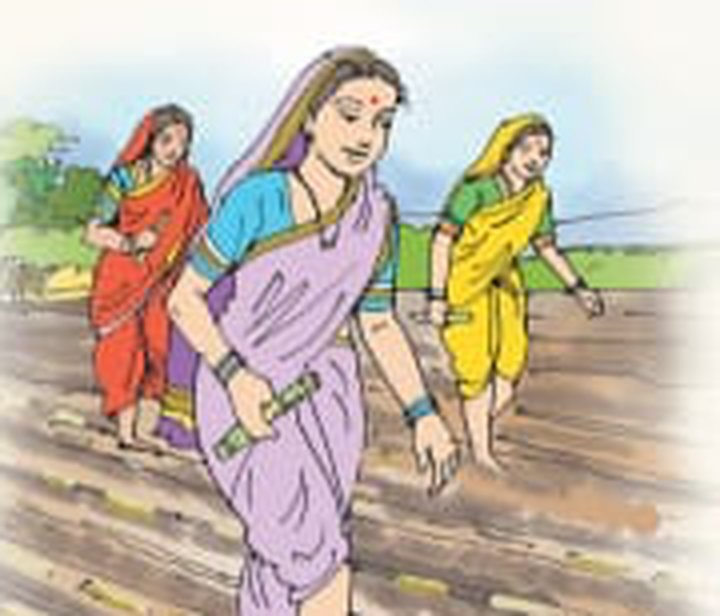
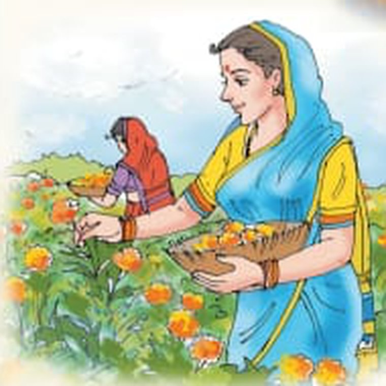
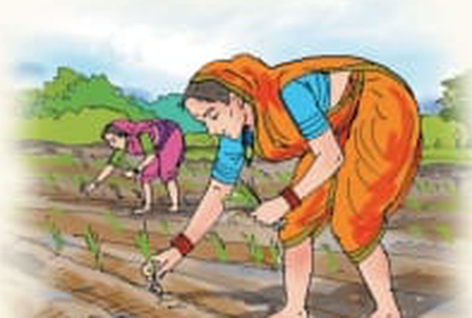
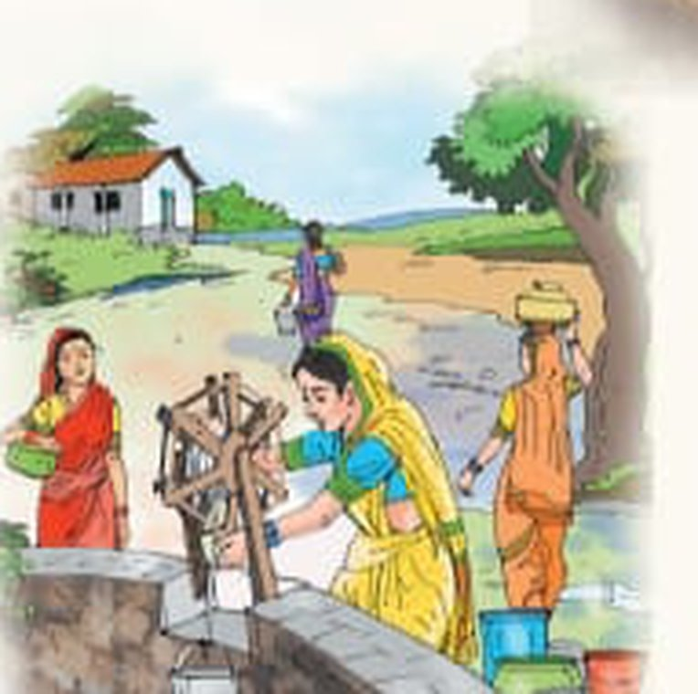

वरिष्ठ वेतन श्रेणी प्रशिक्षण 2026
सादरकर्ते : तुळशीराम सातकर

पाठाची उद्दिष्टे
अध्ययन निष्पत्ती – विद्यार्थी…
०१
कविता योग्य लय, आरोह-अवरोह व भावपूर्ण उच्चारांसह वाचतात.
०२
कवितेतील ग्रामीण शब्दांचे अर्थ समजून ते स्वतःच्या भाषेत वापरतात.
०३
शेतकरी स्त्रीच्या कष्टांविषयी संवेदनशीलता व आदर व्यक्त करतात.
०४
कवितेतील प्रतिमा, ध्रुवपद व रचनेचे सौंदर्य स्वतःच्या शब्दांत स्पष्ट करतात.
कवयित्री परिचय
कल्पना दुधाळ
जन्म – १९७८
- प्रसिद्ध मराठी कवयित्री; ग्रामीण, शेतकरी जीवनाच्या अनुभवांतून कविता लिहिणाऱ्या.
- ‘सिझर कर म्हणतेय माती’ व ‘धग असतेच आसपास’ हे कवितासंग्रह प्रकाशित.
- ‘सिझर कर म्हणतेय माती’ ला ‘कवी कुसुमाग्रज’ पुरस्कारासह एकूण अठ्ठावीस पुरस्कार.
- ‘धग असतेच आसपास’ या संग्रहाला ‘महाराष्ट्र फाउंडेशन’चा पुरस्कार.
- शेतकरी स्त्रीचे कष्ट, मातीशी नाते व जगण्याचा संघर्ष हे कवितेचे मुख्य विषय.

कवितेचा परिचय
मध्यवर्ती कल्पना
आशय
शेतात राबणारी स्त्री दिवसभर शेतीची कामे करते आणि आपले मन, शरीर, जीव मातीत ओतते.
भावना
कष्ट, त्याग व मातीवरील प्रेम; स्वतःचे दुःख बाजूला ठेवून ती शेत व संसार फुलवते.
रचना
लोकगीतासारखी लय; प्रत्येक कडव्याचा शेवट ‘रोज मातीत, मी ग नांदते’ ने.
भाषा
ग्रामीण बोली – ‘कांदं’, ‘बेणं’, ‘मागं’ – त्यामुळे कविता जिवंत वाटते.
शब्दसंपदा
कवितेतील ग्रामीण शब्द व अर्थ
| शब्द | अर्थ |
|---|---|
| सरी-वरंबा | पाणी देण्यासाठी शेतात काढलेले चर (सरी) व त्यांच्यामधील उंचवटा (वरंबा) |
| गोंदणे | अंगावर कायमची नक्षी काढणे; येथे – काळ्या जमिनीवर हिरव्या रोपांची नक्षी उमटवणे |
| बेणं | लागवडीसाठी वापरली जाणारी उसाची कांडी |
| शेंदणे | विहिरीतून दोराने किंवा रहाटाने पाणी ओढून काढणे |
| तोरण | दारावर बांधलेली फुलांची किंवा पानांची माळ |
| सांधणे | तुटलेले जोडणे; येथे – अडचणींतूनही संसार जोडून ठेवणे |
| काळी आई | काळी कसदार जमीन, धरणीमाता |
| नांदणे | संसार करणे, आनंदाने राहणे |
कृती (१) अ
कवितेतील स्त्री करत असलेली कामे
१
कांदे लावणे
२
काळ्या आईला हिरवं गोंदणे
३
झेंडूची फुले तोडणे
४
घरादाराला तोरण बांधणे
५
ऊस लावणे
६
उसाचे बेणे दाबणे
७
खोल विहिरीचे पाणी शेंदणे
८
उन्हातान्हात राबणे
भावार्थ – कडवे १ व २
कामातून जीव ओतणारी स्त्री

“नाही कांदं ग, जीव लावते”
सरी-वरंब्यात ती कांद्याची रोपे लावते; पण फक्त रोपे नाही, तर त्यांना जीव लावते. काळ्या आईच्या (जमिनीच्या) अंगावर जणू हिरवे गोंदण करते.
“नाही फुलं ग, देह तोडते”
सोन्यासारखी झेंडूची फुले तोडताना ती स्वतःचा देह झिजवते. त्याच फुलांचे तोरण घरादाराला बांधून घराला शोभा आणते.
भावार्थ – कडवे ३ व ४
मन दाबून संसार सांधणारी स्त्री
“नाही बेणं ग, मन दाबते”
ऊस लावताना ती बेणे मातीत दाबते; त्यासोबत स्वतःच्या इच्छा, दुःखही मनात दाबून ठेवते. कांड्या-कोंड्यांनी ती आपला संसार सांधते.

“हिरवी होऊन, मागं उरते”
उन्हातान्हात रोज मरमर राबते; पण पिकांच्या हिरवाईतून ती मागे उरते. खोल विहिरीचे पाणी शेंदून शेत जगवते.
काव्यसौंदर्य
“रोज मातीत, मी ग नांदते”
माती हेच तिचे घर, तिचा संसार आणि तिचे जीवन – रोजच्या कष्टांतच तिचे सुख आहे.
पुनरावृत्ती
‘बाई लावते’, ‘बाई तोडते’ – लयबद्धता व गेयता.
विरोधाभास
‘नाही कांदं ग, जीव लावते’ – कामामागील त्याग.
प्रतिमा
काळी आई = जमीन; हिरवं गोंदणं = रोपांची रांग.
कवितेची परंपरा
मराठी कवितेतील कष्टकरी स्त्रीचा आवाज
लोकपरंपरा
जात्यावरच्या ओव्या
दळण, कांडण, शेतीची कामे करताना स्त्रियांनी गायलेली गीते – सुख-दुःख मांडण्याचे साधन.
१८८० – १९५१
बहिणाबाई चौधरी
खानदेशी बोलीतून शेती, संसार व निसर्गावर साध्या, अर्थपूर्ण कविता.
आजची कविता
कल्पना दुधाळ
आजच्या शेतकरी स्त्रीचे कष्ट, वेदना व मातीशी नाते थेट ग्रामीण भाषेत.
‘रोज मातीत’ हीच परंपरा पुढे नेणारी कविता आहे.
अध्यापन पद्धती
वर्गात कविता शिकवण्याच्या पायऱ्या
१
पूर्वज्ञान
शेतातील कामांची चित्रे दाखवून अनुभव विचारणे.
२
आदर्श वाचन
शिक्षकांचे लयबद्ध, भावपूर्ण वाचन.
३
अनुकरण वाचन
गटागटाने वाचन; कठीण शब्दांचे अर्थ.
४
चर्चा
कडवेनिहाय भावार्थ गटचर्चेतून शोधणे.
५
कृती
आकृतिबंध, प्रश्नोत्तरे व उपक्रम.
रचनावादी दृष्टिकोन
गटकार्य
अनुभवाधिष्ठित शिक्षण
मूल्यमापन
विविध स्तरांवरील नमुना प्रश्न
| स्तर | नमुना प्रश्न |
|---|---|
| ज्ञान | कवितेतील स्त्री कोणकोणती कामे करते? |
| आकलन | ‘हिरवी होऊन, मागं उरते’ या ओळीचा अर्थ लिहा. |
| उपयोजन | तुमच्या परिसरातील शेतकरी स्त्रीच्या दिनक्रमाचे वर्णन करा. |
| रसग्रहण | ‘रोज मातीत, मी ग नांदते’ या ध्रुवपदाचे सौंदर्य स्पष्ट करा. |
| अभिव्यक्ती | ‘माती’ या विषयावर चार ओळींची कविता लिहा. |
अध्यापन व मूल्यमापन
वर्गातील उपक्रम व कृती
- कवितेचे तालासुरात सामूहिक गायन करून घेणे.
- ‘रोज मातीत, मी ग नांदते’ या ओळीचा अर्थ स्वतःच्या शब्दांत लिहा.
- ‘नाही फुलं ग, देह तोडते’ या ओळीतील भावसौंदर्य स्पष्ट करा.
- परिसरातील शेतकरी स्त्रीची मुलाखत घेऊन तिचा दिनक्रम नोंदवा.
- मूल्य: श्रमप्रतिष्ठा, स्त्री-सन्मान व मातीविषयी कृतज्ञता.
समारोप
धन्यवाद!
सादरकर्ते : तुळशीराम सातकर
वरिष्ठ वेतन श्रेणी प्रशिक्षण 2026 · मराठी · पद्य – ‘रोज मातीत’